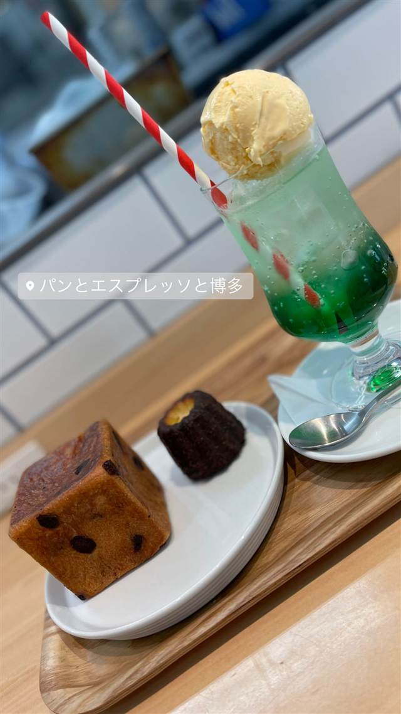

パンとエスプレッソと 博多っと
博多限定、明太子たっぷりの「ムーめんたい」が名物のパン屋
パンとエスプレッソと博多
WHY GO
博多店限定で明太子と明太クリームをのせたムーめんたいを出す
ここだけの一品その土地の味
表参道で2009年に生まれた「パンとエスプレッソと」ののれん分けとして2019年に博多駅前にオープン。ブランドはもともと閉店予定だった赤字ベーカリーだったが、実際に食べてみた社長の判断で存続、今ではSNSで人気に。博多店では明太子を使ったご当地限定パンが名物。
TRIVIA
豆知識
- 本店は本来閉店予定だった赤字のベーカリー部門だったが、実際に食べた社長の判断で存続が決まった
- 博多店限定の「ムーめんたい」は明太子・明太クリーム・明太バターを贅沢に使う
REVIEWS
世間の評判
3.27食べログ
開店前から長蛇の待ち時間
- パンの品質の高さやムー明太セットなどのメニューを評価する声が多い
- 開店前から20人ほど並び席案内まで1時間待つこともあるという声がある
- パンひとつひとつの単価が高くコスパは良くないと感じる人もいる
- スタッフの対応にばらつきがあり待たされることもあるという声がある
食べログ 口コミ477件
| 創業 | 「パンとエスプレッソと」本店は2009年に表参道で創業。博多っとは2019年オープン |
|---|---|
| 系譜 | 表参道本店（2009年創業）ののれん分けで、九州1号店にあたる |
| 看板 | 博多限定「ムーめんたい」（明太子・明太クリーム・明太バターをのせた食パン）、めんたいメロンパン |
| こだわり | 焼きたてパンと本格エスプレッソが売り。博多店では明太子を使ったご当地限定メニューを展開 |
| どこから | 遠方 |
| 行くなら | 行列 |
| 予算 | 昼 ～¥999 夜 ～¥999 |
| 定休日 | 不定休 |
| 予約 | 予約不可 |
| 場所 | 博多駅 福岡県福岡市博多区博多駅前2-8-12 |
| メモ | THE BLOSSOM HAKATA Premier 1F、博多駅とキャナルシティの間に立地。8:00〜19:00無休で、朝から行列（20〜40人程度）ができることもある |
食べたもの：クリームソーダと焼菓子 / アイスコーヒーとプリン
NEARBY
近い店・同じ系統の店
-
 ベーカリー 自由が丘駅
baguette rabbit 自由が丘店（バゲットラビット）
石臼自家製粉の小麦で2日仕込む看板バゲット、金賞受賞
昼 ～¥999 夜 ～¥999
ベーカリー 自由が丘駅
baguette rabbit 自由が丘店（バゲットラビット）
石臼自家製粉の小麦で2日仕込む看板バゲット、金賞受賞
昼 ～¥999 夜 ～¥999
-
 ベーカリー 六本木
bricolage bread & co.（六本木ヒルズけやき坂テラス店）
大阪のパン屋と西麻布フレンチ、ノルウェーの3者が生んだ全粒粉パン
昼 ¥1,000～¥1,999 夜 ¥1,000～¥1,999
ベーカリー 六本木
bricolage bread & co.（六本木ヒルズけやき坂テラス店）
大阪のパン屋と西麻布フレンチ、ノルウェーの3者が生んだ全粒粉パン
昼 ¥1,000～¥1,999 夜 ¥1,000～¥1,999
-
 ベーカリー 自由が丘
C'EST UNE BONNE IDEE 自由が丘店
店名は仏語で「それはいいアイデアだ」の意、国産小麦の食パン
昼 ¥1,000～¥1,999 夜 ¥1,000～¥1,999
ベーカリー 自由が丘
C'EST UNE BONNE IDEE 自由が丘店
店名は仏語で「それはいいアイデアだ」の意、国産小麦の食パン
昼 ¥1,000～¥1,999 夜 ¥1,000～¥1,999
-
 ベーカリー 軽井沢
ベーカリー&レストラン 沢村 旧軽井沢
隣接工房の薪窯と石臼製粉で焼き旧軽井沢店だけで焼きたてパンが手に入る
昼 ¥2,000～¥2,999 夜 ¥2,000～¥2,999
ベーカリー 軽井沢
ベーカリー&レストラン 沢村 旧軽井沢
隣接工房の薪窯と石臼製粉で焼き旧軽井沢店だけで焼きたてパンが手に入る
昼 ¥2,000～¥2,999 夜 ¥2,000～¥2,999
-
 ベーカリー 伊勢市駅（車約5分）
COQUELICOT ROUGE（コクリコルージュ）
厳選バターを使い分けて焼く、SNSで話題のカラフルなクロワッサン
昼 ¥1,000～¥1,999 夜 ¥1,000～¥1,999
ベーカリー 伊勢市駅（車約5分）
COQUELICOT ROUGE（コクリコルージュ）
厳選バターを使い分けて焼く、SNSで話題のカラフルなクロワッサン
昼 ¥1,000～¥1,999 夜 ¥1,000～¥1,999
-
 ベーカリー 池ノ上
YELLOW CAFE
希少な「%ARABICA」豆を使った焼きたてクロワッサン
昼 ¥1,000～¥1,999
ベーカリー 池ノ上
YELLOW CAFE
希少な「%ARABICA」豆を使った焼きたてクロワッサン
昼 ¥1,000～¥1,999